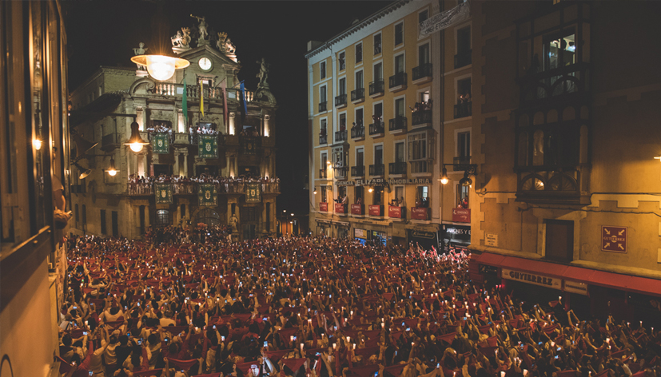

Qué es el Pobre de mí
El “Pobre de mí” es el acto que pone fin a las fiestas de San Fermín. Cada 14 de julio a medianoche, miles de personas se reúnen en la Plaza del Ayuntamiento para despedir la fiesta con velas encendidas y un canto colectivo que marca el cierre oficial.
Cuándo y dónde se celebra
Tiene lugar la noche del 14 de julio a las 00:00 en la Plaza del Ayuntamiento de Pamplona. Es uno de los momentos más multitudinarios y simbólicos de toda la semana.
Por qué vivirlo bien no es fácil
La alta concentración de personas hace que el acceso a la plaza sea complicado y que la visibilidad desde la calle sea muy limitada. Además, el ambiente puede resultar intenso si no se gestiona bien el espacio.
Opciones para vivir el Pobre de mí
Existen distintas formas de estar presente en este momento:
- Desde la plaza: experiencia completamente inmersiva, pero con gran densidad de gente.
- Desde calles cercanas: algo más de espacio, aunque con menor visibilidad del acto principal.
- Desde un balcón: visión completa, mayor comodidad y una experiencia más tranquila.
Cada opción transmite algo distinto, pero la perspectiva cambia completamente la forma de vivirlo.
Tipos de experiencias
Todas las propuestas parten de una misma idea: vivir el cierre de la fiesta con perspectiva. A partir de ahí, cambia el tipo de experiencia.


¿Cuánto cuesta vivir el Pobre de mí desde un balcón?
Las opciones varían en función de la ubicación y el tipo de acceso. De forma orientativa, se sitúan en un rango intermedio dentro de las experiencias de San Fermín.
A partir de ahí, cada propuesta se adapta en función del grupo y del nivel de experiencia que se busca.
Una forma diferente de cerrar la fiesta
El “Pobre de mí” no es solo un acto, es una emoción compartida. Desde un balcón, ese momento se vive con más calma, permitiendo entender lo que realmente significa.
Es una forma de cerrar San Fermín desde la perspectiva, sin perder la intensidad del momento.
Por qué hacemos esto
Este es el momento en el que todo se detiene.
Nuestra forma de compartirlo es ofrecer una manera más cuidada de vivirlo, manteniendo la emoción pero con una experiencia más consciente, en línea con todo lo que hacemos como equipo.
Cuéntanos cómo te gustaría vivir este momento y te proponemos opciones a medida.

No tiene nada que ver con estar abajo. Mucho mejor.
Seguir descubriendo San Fermín
El “Pobre de mí” marca el final, pero forma parte de un recorrido que comienza mucho antes.
Puedes empezar por el Chupinazo, donde todo comienza, o vivir la intensidad del encierro.
También puedes descubrir la Procesión de San Fermín o la cercanía de los Gigantes.
Y si buscas algo más personalizado, puedes explorar nuestras experiencias a medida o profundizar en las guías de San Fermín.
Porque el final también forma parte de la historia.
Un recuerdo que va más allá del momento
Algunas experiencias no terminan cuando acaba el evento. Para grupos, empresas o momentos especiales, podemos acompañarlo con piezas diseñadas específicamente para la ocasión.
Desde elementos sencillos hasta detalles más cuidados, todo se plantea como una extensión natural de la experiencia.
Porque a veces lo que se lleva puesto también forma parte de lo vivido.